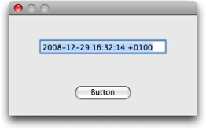
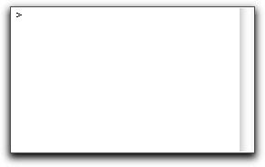
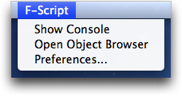
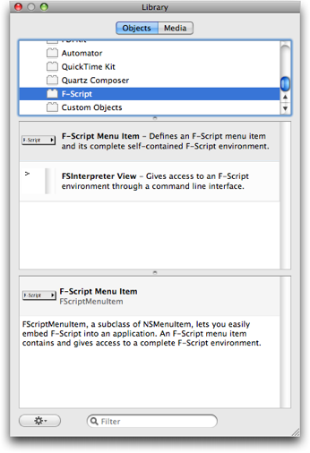
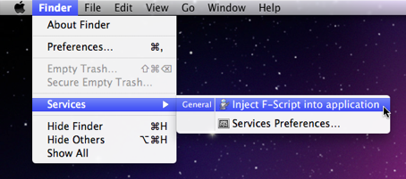

Revised April 2010
As we already saw in the previous articles in this series, F-Script can be used as a standalone application which dynamically loads your Objective-C classes and enables you to access them either interactively or using scripts. In this article, we will explore another possibility, i.e. including F-Script in your own applications.
All F-Script functionalities are available through components which can be integrated into applications. This enables you to:
Because F-Script and Cocoa share the same object model, integration is easy and advanced.
F-Script can be downloaded at http://www.fscript.org.
Note: This article is an updated version of Embedding F-Script into Cocoa, which is published on the O'Reilly MacDevcenter here.
The F-Script runtime is integrated into an application via a certain number of Objective-C classes, which are provided with F-Script in the form of a framework (FScript.framework). The following table illustrates the main characteristics of these classes in terms of integration.
| Name |
FSInterpreter
|
|---|---|
| Role | Each instance of this class represents a complete F-Script interpreter (workspace included). An application may instantiate any number of interpreters. |
| Main Features |
|
| Name |
FSInterpreterResult
|
| Role |
Represents the result of an execution of F-Script code by an FSInterpreter.
|
| Main Features |
|
| Name |
FScriptMenuItem
|
| Role | A graphical component, a subclass of NSMenuItem, for embedding a complete F-Script environement and letting users acess it. |
| Main Features |
|
| Name |
FSInterpreterView
|
| Role | A graphical component, a subclass of NSView, which provides F-Script with a command line interface. An FSInterpreterView has its own interpreter and F-Script workspace and can thus be used directly without requiring any other configuration. |
| Main Features |
|
| Name |
FSSystem
|
| Role | Enables access (from both Objective-C and F-Script) to various services of the F-Script interpreter. In interactive sessions, the runtime creates a FSSystem instance and associates it with the identifier "sys" in the session's workspace. |
| Main Features |
|
| Name |
FSBlock
|
| Role | A block represents a script (in other words, a piece of F-Script code that can have arguments, local variables and bindings to other objects). |
| Main Features |
|
| Name |
FSNSString
|
| Role | A category of NSString. |
| Main Features |
|
A program wishing to use this API should use FScript.framework (with
Xcode: select "Add to Project..." in the project menu and add
FScript.framework to your project) and the following import directive:
#import <FScript/FScript.h>
In order to use the F-Script framework from your own applications you will likely need to put it into a standard locations for frameworks on Mac OS X, like ~/Library/Frameworks (where ~ stands for your home directory) or /Library/Frameworks.
You can also directly bundle the framework into your application. This way, you will be able to ship a self-contained solution. To learn how to do that, see this tutorial by Julius Guzy.
You'll find more information on frameworks in the documentation provided by Apple in the Introduction to Framework Programming Guide.
This method offers the simplest means of creating and executing
F-Script code from Objective-C. Invoked on an NSString containing the
source code for an F-Script block, it creates a FSBlock instance which
can then be executed. We can pass it parameters and retrieve the product
of the execution. This technique enables us to unify the usage of
blocks as, once created, they are manipulated in the same way from both
F-Script and Objective-C. In particular, they are executed by sending
them a value... message.
Example 1: hello world
Here is a simple F-Script block that, when executed, print "hello world" on the standard output:
[stdout print:'hello world']
And here's how we embed it and execute it in Objective-C:
// Create a string containing the F-Script code
NSString *fscriptCode = @"[stdout print:'hello world']";
// Create a block object from the string
FSBlock *myBlock = [fscriptCode asBlock];
// Execute the block
[myBlock value];
It is possible to combine these instructions into one line:
[[@"[stdout print:'hello world']" asBlock] value];
Note: in Objective-C, brackets (i.e.
[
and
]
) denote a message send, while in F-Script they denote a block.
In the example, the character string containing the F-Script code is hardcoded, although it is possible to use a string dynamically built at run time.
Example 2: passing parameters and retrieving the result
Let us now turn our attention to parameter passing between Objective-C and F-Script and retrieval of results. As we have already seen, with blocks everything is done in the same way as with F-Script, even though we are now manipulating them from Objective-C. In the folowing example, we define a simple F-Script block that takes two strings and returns their concatenation. Here is how it looks in pure F-Script:
[:s1 :s2| s1 ++ s2]
NSString *result = [[@"[:s1 :s2| s1 ++ s2]" asBlock] value:@"first part" value:@"second part"];
Example 3: object graph
As F-Script blocks are objects, they can be referenced by other objects. In this example, a block will be the target of an NSButton. In addition, F-Script variables, inside the block code, may reference external objects. In this example, the F-Script code will reference an NSTextField.
Let's suppose that in an Objective-C program we have an NSButton and an NSTextField. We wish to use an F-Script block to display the current date and time in the text field when the button is pressed.
Fig. 1. The mini-application we'll build
But how do you establish a link between an F-Script variable and the external text field? All that is required is the mother block technique: our block is produced by another block which is responsible for establishing the link with the NSTExtField, which it will be given as an argument, using the fact that the blocks are closures (you'll find more on this in the Smalltalk literature).
The following is the complete program for the example.
#import <Cocoa/Cocoa.h>
#import <FScript/FScript.h>
int main(int argc, const char *argv[])
{
[NSApplication sharedApplication];
// Configure GUI components
NSButton *button = [[NSButton alloc] initWithFrame:NSMakeRect(100, 20, 100, 30)];
NSTextField *textField = [[NSTextField alloc] initWithFrame:NSMakeRect(50, 100, 200, 20)];
NSWindow *mainWindow = [[NSWindow alloc] initWithContentRect:NSMakeRect(100, 100, 300, 160)
styleMask:NSClosableWindowMask | NSTitledWindowMask
backing:NSBackingStoreBuffered
defer:NO];
[[mainWindow contentView] addSubview:button];
[[mainWindow contentView] addSubview:textField];
[button setBezelStyle:NSRoundedBezelStyle];
[mainWindow orderFront:nil];
// Create the mother block
FSBlock *motherBlock = [@"[:textField| [textField setStringValue:NSDate date description]]" asBlock];
// Use the mother block to create the block that will display the current date and time
FSBlock *printDate = [motherBlock value:textField];
// Set the printDate block as the target of our button
[button setTarget:printDate];
[button setAction:@selector(value:)];
return NSApplicationMain(argc, (const char **) argv);
}
In the above examples, the possibility of errors is not considered, as the F-Script code is fully known here, and we know that the syntax is correct and there is no risk of F-Script generating an error on execution. In more complex cases, errors may appear on two occasions:
When such an error occurs, F-Script throws an exception (using the native Objective-C exception model). The
asBlock
and
value...
methods do not catch exceptions, so the exception will be propagated to the caller.
As an alternative to a
value...
method, you can use the
executeWithArguments:
method to execute a block. This method catches exceptions and returns
an FSInterpreter object which gives you complete information about the
error and help you present it to the user. Example:
// Create a block
FSBlock *myBlock = [@"[:a :b| a / b]" asBlock];
// Prepare the arguments for block execution
NSArray *arguments = [NSArray arrayWithObjects:[NSNumber numberWithInt:10], [NSNumber numberWithInt:0], nil];
// Execute the block and get back an FSInterpreterResult instance
FSInterpreterResult *interpreterResult = [myBlock executeWithArguments:arguments];
// Deal with the result of the execution
if ([interpreterResult isOK])
NSLog(@"Execution OK. Result = %@", [interpreterResult result]);
else
NSLog([interpreterResult errorMessage]);
}
When executed, this code will log "error: division by zero".
You will learn more about the FSInterpreterResult class in the next section.
The techniques described above are very easy to use and suitable for numerous situations. Nonetheless, certain cases require more control and additional functionalities. In such cases we can look to the FSInterpreter class, which offers total control of the F-Script interpreter. Among other things, this class offers context conservation, in other words, the possibility of executing different bits of F-Script code at different times in the same workspace.
An FSInterpreter instance represents an F-Script interpreter associated with a workspace. It is easily created in Objective-C:
FSInterpreter *myInterpreter = [[FSInterpreter alloc] init];
An interpreter enables you to add variables in the associated workspace or to modify the value of existing variables:
[myInterpreter setObject:[NSDate date] forIdentifier:@"myDate"];
An interpreter enables you to consult the value of a variable in the workspace:
BOOL found;
id result = [myInterpreter objectForIdentifier:@"myDate" found:&found];
It is also possible to retrieve the list of names of variables defined in the workspace, in the form of an array of NSStrings:
NSArray *identifiers = [myInterpreter identifiers];
To execute F-Script code, pass a character string containing this code to the
execute:
method of the interpreter. You will get back an FSInterpreterResult
object. The following example uses the F-Script "hello world" code:
FSInterpreterResult *result = [myInterpreter execute:@"stdout print:'hello world'"];
The FSInterpreterResult object offers complete control over the execution result. The
isSyntaxError
,
isExecutionError
and
isOK
methods return a boolean which enables us to know the status of the result. In the event of an error, the
errorMessage
and
errorRange
methods enable us to obtain the error message and relevant location in the F-Script source code. The
inspectBlocksInCallStack
method lets us open the graphical inspector of the blocks present in
the callstack corresponding to the error. If execution does not throw an
error, the
result
method enables us to get the result of the evaluation of the F-Script code.
To illustrate this API, here is a complete program, to be compiled in Xcode like a Foundation Tool and launched from the Xcode or a UNIX terminal window. It is a command line interface for F-Script: the program reads a command from its standard input, executes it, prints the result on its standard output and then starts again. Note that this is a non-graphical program (does not use the application kit). It therefore does not allow the F-Script graphic functionalities to be used.
#import <stdio.h>
#import <Foundation/Foundation.h>
#import <FScript/FScript.h>
int main (int argc, char **argv, char **env)
{
// Create the interpreter
FSInterpreter *interpreter = [[FSInterpreter alloc] init];
while(1)
{
char c_command[10000];
NSString *command = [NSString stringWithUTF8String:fgets(c_command, 10000, stdin)];
// Execute the F-Script command
FSInterpreterResult *execResult = [interpreter execute:command];
if ([execResult isOK]) // test status of the result
{
id result = [execResult result];
// Print the result
if (result == nil)
puts("nil");
else
puts([[result printString] UTF8String]);
if (![result isKindOfClass:[FSVoid class]])
putchar('\n');
}
else
{
// Print an error message
puts([[NSString stringWithFormat:@"%@ , character %d\n", [execResult errorMessage], [execResult errorRange].location] UTF8String]);
}
}
return 0;
}
The FSInterpreterView class is a subclass of NSView that offers an interactive, command line interface-type F-Script graphical component. The component has its own F-Script interpreter and is ready to use. It may be instantiated and manipulated by program.
Fig. 2. An FSInterpreterView
This object has methods that allow you to modify the font size, display a service message for the user, insert a command or retrieve the associated FSInterpreter object.
The following simple Objective-C program opens a window containing an FSInterpreter View.
#import <Cocoa/Cocoa.h>
#import <FScript/FScript.h>
int main(int argc, const char *argv[])
{
// Initialize the Cocoa application environment
[NSApplication sharedApplication];
// Create a window
NSWindow *mainWindow = [[NSWindow alloc] initWithContentRect:NSMakeRect(100, 100, 500, 400)
styleMask:NSClosableWindowMask | NSTitledWindowMask
backing:NSBackingStoreBuffered
defer:NO];
// Create an FSInterpreterView
FSInterpreterView *fscriptView = [[FSInterpreterView alloc] initWithFrame:NSMakeRect(0, 0, 0, 0)];
// Put the FSInterpreterView inside the window
[mainWindow setContentView:fscriptView];
// We want big fonts !
[fscriptView setFontSize:16];
// Put the window onscreen
[mainWindow orderFront:nil];
// Run the application
return NSApplicationMain(argc, (const char **) argv);
}
FScriptMenuItem, a subclass of NSMenuItem, lets you easily embed a complete F-Script environment into an application. Each FScriptMenuItem instance has its own F-Script interpreter and contains a menu that provides access to the standard F-Script user interface elements. From an FScriptMenuItem, the user can access an F-Script console, open object browsers and open the F-Script preference panel.
Fig. 3. An FScriptMenuItem
Typically, an FScriptMenuItem is initialized with the init method. Then, it can be inserted into an existing menu. For instance, the following Objective-C instruction adds an F-Script menu to the main menu of the application:
[[NSApp mainMenu] addItem:[[FScriptMenuItem alloc] init]];
An FScriptMenuItem is associated with an FSInterpreterView (which is used by the console window). You use the interpreterView
method to access the FSInterpreterView. From the FSInterpreterView, you
can programmatically access the associated FSInterpreter, using the interpreter method.
FSInterpreterView and FScriptMenuItem objects can be manipulated directly from Interface Builder using the F-Script plugin for Interface Builder (FScriptIBPlugin.ibplugin).
Fig. 4. The F-Script plugin for Interface Builder
The palette and plugin enable FScriptMenuItem and FSInterpreterView objects to be placed in a graphical interface using a simple drag and drop movement.
In this article we showed how Objective-C developers could embed F-Script into their applications. But what about existing, third party, applications? Here comes F-Script Anywhere. Originaly created by Nicholas Riley, F-Script Anywhere lets you dynamically inject F-Script into any Cocoa application. F-Script injection brings amazing capabilities: it lets you explore applications from the inside, interactively navigating and manipulating the internal Objective-C objects they are made of. And it is all done live, while the applications are running.
For example, here is how the Finder looks like from the inside and here is a fun video clip showing how you can reprogram an application on the fly.
On Mac OS X 10.6, F-Script injection is provided by the F-Script Anywhere injection service developed by Silvio H. Ferreira. It adds an automated F-Script injection procedure in the Services menu, meaning that injecting a whole F-Script environment in an application is now just two mouse clicks away: one to go to the Services menu, and one to select the "Inject F-Script into application" item.
Fig. 5. Injecting F-Script into the Finder using the F-Script Anywhere injection service
Once injected (which can take a few seconds), F-Script will make itself available by adding an F-Script menu in the menu bar of the target application.Copyright © 2006-2010 Philippe Mougin